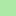

<!doctype html>
<html lang="en">
    <head>
        <meta charset="utf-8">
        <meta http-equiv="X-UA-Compatible" content="IE=edge">
        <meta name="viewport" content="initial-scale=1,user-scalable=no,maximum-scale=1,width=device-width">
        <meta name="mobile-web-app-capable" content="yes">
        <meta name="apple-mobile-web-app-capable" content="yes">
        <link rel="stylesheet" href="css/leaflet.css">
        <link rel="stylesheet" href="css/L.Control.Layers.Tree.css">
        <link rel="stylesheet" href="css/L.Control.Locate.min.css">
        <link rel="stylesheet" href="css/qgis2web.css">
        <link rel="stylesheet" href="css/fontawesome-all.min.css">
        <link rel="stylesheet" href="css/leaflet-control-geocoder.Geocoder.css">
        <link rel="stylesheet" href="css/leaflet-measure.css">
        <style>
        html, body, #map {
            width: 100%;
            height: 100%;
            padding: 0;
            margin: 0;
        }
        .rw-label {
    font-size: 14px;
    font-weight: bold;
    color: rgb(18, 17, 17);
    background-color:rgba(235, 230, 230, 0.707);
    padding: 2px;
    border-radius: 3px;
}
        </style>
        <title></title>
    </head>
    <body>
        <div id="map">
        </div>
        <script src="js/qgis2web_expressions.js"></script>
        <script src="js/leaflet.js"></script>
        <script src="js/L.Control.Layers.Tree.min.js"></script>
        <script src="js/L.Control.Locate.min.js"></script>
        <script src="js/multi-style-layer.js"></script>
        <script src="js/leaflet.rotatedMarker.js"></script>
        <script src="js/leaflet.pattern.js"></script>
        <script src="js/leaflet-hash.js"></script>
        <script src="js/Autolinker.min.js"></script>
        <script src="js/rbush.min.js"></script>
        <script src="js/labelgun.min.js"></script>
        <script src="js/labels.js"></script>
        <script src="js/leaflet-control-geocoder.Geocoder.js"></script>
        <script src="js/leaflet-measure.js"></script>
        <script src="data/BatasLuar_1.js"></script>
        <script src="data/BPN_Lahan_2.js"></script>
        <script src="data/Sungai_line_3.js"></script>
        <script src="data/Sungai_4.js"></script>
        <script src="data/JalanLain_5.js"></script>
        <script src="data/JalanLokal_6.js"></script>
        <script src="data/JalanKolektor_7.js"></script>
        <script src="data/BatasRW_8.js"></script>
        <script src="data/BatasKelurahan_9.js"></script>
        <script>
        var map = L.map('map', {
            zoomControl:false, maxZoom:28, minZoom:1
        }).fitBounds([[-3.099034723774191,119.94798111049916],[-2.847455599473785,120.29334893233876]]);
        var coordinatesRW = [
    {lat: -2.980, lng: 120.155, namaRW: "RW 01"}, 
    {lat: -2.975, lng: 120.130, namaRW: "RW 02"},
    {lat: -2.985, lng: 120.130, namaRW: "RW 03"},
    {lat: -2.960, lng: 120.130, namaRW: "RW 04"},
    {lat: -2.948, lng: 120.133, namaRW: "RW 05"}   // Gantilah dengan koordinat RW yang sesuai
];

// Menambahkan marker untuk setiap RW dengan label di tengah polygon
coordinatesRW.forEach(function(coord) {
    L.marker([coord.lat, coord.lng])
        .bindTooltip(coord.namaRW, {
            permanent: true,
            direction: 'center',
            className: 'rw-label'  // Gaya label
        })
        .addTo(map);  // Pastikan Anda menambahkan marker ke peta
});
        var hash = new L.Hash(map);
        map.attributionControl.setPrefix('<a href="https://github.com/tomchadwin/qgis2web" target="_blank">qgis2web</a> &middot; <a href="https://leafletjs.com" title="A JS library for interactive maps">Leaflet</a> &middot; <a href="https://qgis.org">QGIS</a>');
        var autolinker = new Autolinker({truncate: {length: 30, location: 'smart'}});
        // remove popup's row if "visible-with-data"
        function removeEmptyRowsFromPopupContent(content, feature) {
         var tempDiv = document.createElement('div');
         tempDiv.innerHTML = content;
         var rows = tempDiv.querySelectorAll('tr');
         for (var i = 0; i < rows.length; i++) {
             var td = rows[i].querySelector('td.visible-with-data');
             var key = td ? td.id : '';
             if (td && td.classList.contains('visible-with-data') && feature.properties[key] == null) {
                 rows[i].parentNode.removeChild(rows[i]);
             }
         }
         return tempDiv.innerHTML;
        }
        // add class to format popup if it contains media
		function addClassToPopupIfMedia(content, popup) {
			var tempDiv = document.createElement('div');
			tempDiv.innerHTML = content;
			if (tempDiv.querySelector('td img')) {
				popup._contentNode.classList.add('media');
					// Delay to force the redraw
					setTimeout(function() {
						popup.update();
					}, 10);
			} else {
				popup._contentNode.classList.remove('media');
			}
		}
        var zoomControl = L.control.zoom({
            position: 'topleft'
        }).addTo(map);
        L.control.locate({locateOptions: {maxZoom: 19}}).addTo(map);
        var measureControl = new L.Control.Measure({
            position: 'topleft',
            primaryLengthUnit: 'meters',
            secondaryLengthUnit: 'kilometers',
            primaryAreaUnit: 'sqmeters',
            secondaryAreaUnit: 'hectares'
        });
        measureControl.addTo(map);
        document.getElementsByClassName('leaflet-control-measure-toggle')[0].innerHTML = '';
        document.getElementsByClassName('leaflet-control-measure-toggle')[0].className += ' fas fa-ruler';
        var bounds_group = new L.featureGroup([]);
        function setBounds() {
        }
        map.createPane('pane_ESRISatellite_0');
        map.getPane('pane_ESRISatellite_0').style.zIndex = 400;
        var layer_ESRISatellite_0 = L.tileLayer('https://server.arcgisonline.com/ArcGIS/rest/services/World_Imagery/MapServer/tile/{z}/{y}/{x}', {
            pane: 'pane_ESRISatellite_0',
            opacity: 1.0,
            attribution: '',
            minZoom: 1,
            maxZoom: 28,
            minNativeZoom: 0,
            maxNativeZoom: 18
        });
        layer_ESRISatellite_0;
        map.addLayer(layer_ESRISatellite_0);
        function pop_BatasLuar_1(feature, layer) {
            var popupContent = '<table>\
                    <tr>\
                        <td colspan="2"><strong>KETERANGAN</strong><br />' + (feature.properties['KETERANGAN'] !== null ? autolinker.link(String(feature.properties['KETERANGAN']).replace(/'/g, '\'').replace(/"/g, '&quot;').toLocaleString()) : '') + '</td>\
                    </tr>\
                    <tr>\
                        <td colspan="2"><strong>LUAS (Ha)</strong><br />' + (feature.properties['LUAS'] !== null ? autolinker.link(String(feature.properties['LUAS']).replace(/'/g, '\'').replace(/"/g, '&quot;').toLocaleString()) : '') + '</td>\
                    </tr>\
                </table>';
            var content = removeEmptyRowsFromPopupContent(popupContent, feature);
			layer.on('popupopen', function(e) {
				addClassToPopupIfMedia(content, e.popup);
			});
			layer.bindPopup(content, { maxHeight: 400 });
        }

        function style_BatasLuar_1_0(feature) {
            switch(String(feature.properties['KETERANGAN'])) {
                case 'Hutan':
                    return {
                pane: 'pane_BatasLuar_1',
                stroke: false, 
                fill: true,
                fillOpacity: 0.8,
                fillColor: 'rgba(74,161,39,1.0)',
                interactive: true,
            }
                    break;
                case 'Pemukiman/Bangunan':
                    return {
                pane: 'pane_BatasLuar_1',
                stroke: false, 
                fill: true,
                fillOpacity: 0.8,
                fillColor: 'rgba(252,155,77,1.0)',
                interactive: true,
            }
                    break;
                case 'Perkebunan':
                    return {
                pane: 'pane_BatasLuar_1',
                stroke: false, 
                fill: true,
                fillOpacity: 0.8,
                fillColor: 'rgba(173,233,166,1.0)',
                interactive: true,
            }
                    break;
                case 'Sawah':
                    return {
                pane: 'pane_BatasLuar_1',
                stroke: false, 
                fill: true,
                fillOpacity: 0.8,
                fillColor: 'rgba(195,149,224,1.0)',
                interactive: true,
            }
                    break;
            }
        }
        map.createPane('pane_BatasLuar_1');
        map.getPane('pane_BatasLuar_1').style.zIndex = 401;
        map.getPane('pane_BatasLuar_1').style['mix-blend-mode'] = 'normal';
        var layer_BatasLuar_1 = new L.geoJson(json_BatasLuar_1, {
            attribution: '',
            interactive: true,
            dataVar: 'json_BatasLuar_1',
            layerName: 'layer_BatasLuar_1',
            pane: 'pane_BatasLuar_1',
            onEachFeature: pop_BatasLuar_1,
            style: style_BatasLuar_1_0,
        });
        bounds_group.addLayer(layer_BatasLuar_1);
        map.addLayer(layer_BatasLuar_1);
        function pop_BPN_Lahan_2(feature, layer) {
            var popupContent = '<table>\
                    <tr>\
                        <td colspan="2">' + (feature.properties['Id'] !== null ? autolinker.link(String(feature.properties['Id']).replace(/'/g, '\'').replace(/"/g, '&quot;').toLocaleString()) : '') + '</td>\
                    </tr>\
                </table>';
            var content = removeEmptyRowsFromPopupContent(popupContent, feature);
			layer.on('popupopen', function(e) {
				addClassToPopupIfMedia(content, e.popup);
			});
			layer.bindPopup(content, { maxHeight: 400 });
        }

        function style_BPN_Lahan_2_0() {
            return {
                pane: 'pane_BPN_Lahan_2',
                opacity: 1,
                color: 'rgba(35,35,35,1.0)',
                dashArray: '',
                lineCap: 'butt',
                lineJoin: 'miter',
                weight: 1.0, 
                fill: true,
                fillOpacity: 1,
                fillColor: 'rgba(131,81,36,1.0)',
                interactive: false,
            }
        }
        map.createPane('pane_BPN_Lahan_2');
        map.getPane('pane_BPN_Lahan_2').style.zIndex = 402;
        map.getPane('pane_BPN_Lahan_2').style['mix-blend-mode'] = 'normal';
        var layer_BPN_Lahan_2 = new L.geoJson(json_BPN_Lahan_2, {
            attribution: '',
            interactive: false,
            dataVar: 'json_BPN_Lahan_2',
            layerName: 'layer_BPN_Lahan_2',
            pane: 'pane_BPN_Lahan_2',
            onEachFeature: pop_BPN_Lahan_2,
            style: style_BPN_Lahan_2_0,
        });
        bounds_group.addLayer(layer_BPN_Lahan_2);
        map.addLayer(layer_BPN_Lahan_2);
        function pop_Sungai_line_3(feature, layer) {
            var popupContent = '<table>\
                    <tr>\
                        <td colspan="2">' + (feature.properties['id'] !== null ? autolinker.link(String(feature.properties['id']).replace(/'/g, '\'').replace(/"/g, '&quot;').toLocaleString()) : '') + '</td>\
                    </tr>\
                </table>';
            var content = removeEmptyRowsFromPopupContent(popupContent, feature);
			layer.on('popupopen', function(e) {
				addClassToPopupIfMedia(content, e.popup);
			});
			layer.bindPopup(content, { maxHeight: 400 });
        }

        function style_Sungai_line_3_0() {
            return {
                pane: 'pane_Sungai_line_3',
                opacity: 1,
                color: 'rgba(40,181,232,1.0)',
                dashArray: '',
                lineCap: 'square',
                lineJoin: 'bevel',
                weight: 1.0,
                fillOpacity: 0,
                interactive: false,
            }
        }
        map.createPane('pane_Sungai_line_3');
        map.getPane('pane_Sungai_line_3').style.zIndex = 403;
        map.getPane('pane_Sungai_line_3').style['mix-blend-mode'] = 'normal';
        var layer_Sungai_line_3 = new L.geoJson(json_Sungai_line_3, {
            attribution: '',
            interactive: false,
            dataVar: 'json_Sungai_line_3',
            layerName: 'layer_Sungai_line_3',
            pane: 'pane_Sungai_line_3',
            onEachFeature: pop_Sungai_line_3,
            style: style_Sungai_line_3_0,
        });
        bounds_group.addLayer(layer_Sungai_line_3);
        map.addLayer(layer_Sungai_line_3);
        function pop_Sungai_4(feature, layer) {
            var popupContent = '<table>\
                    <tr>\
                        <td colspan="2">' + (feature.properties['id'] !== null ? autolinker.link(String(feature.properties['id']).replace(/'/g, '\'').replace(/"/g, '&quot;').toLocaleString()) : '') + '</td>\
                    </tr>\
                </table>';
            var content = removeEmptyRowsFromPopupContent(popupContent, feature);
			layer.on('popupopen', function(e) {
				addClassToPopupIfMedia(content, e.popup);
			});
			layer.bindPopup(content, { maxHeight: 400 });
        }

        function style_Sungai_4_0() {
            return {
                pane: 'pane_Sungai_4',
                opacity: 1,
                color: 'rgba(109,173,241,1.0)',
                dashArray: '',
                lineCap: 'butt',
                lineJoin: 'miter',
                weight: 1.0, 
                fill: true,
                fillOpacity: 1,
                fillColor: 'rgba(34,159,234,1.0)',
                interactive: false,
            }
        }
        map.createPane('pane_Sungai_4');
        map.getPane('pane_Sungai_4').style.zIndex = 404;
        map.getPane('pane_Sungai_4').style['mix-blend-mode'] = 'normal';
        var layer_Sungai_4 = new L.geoJson(json_Sungai_4, {
            attribution: '',
            interactive: false,
            dataVar: 'json_Sungai_4',
            layerName: 'layer_Sungai_4',
            pane: 'pane_Sungai_4',
            onEachFeature: pop_Sungai_4,
            style: style_Sungai_4_0,
        });
        bounds_group.addLayer(layer_Sungai_4);
        map.addLayer(layer_Sungai_4);
        function pop_JalanLain_5(feature, layer) {
            var popupContent = '<table>\
                    <tr>\
                        <td colspan="2">' + (feature.properties['id'] !== null ? autolinker.link(String(feature.properties['id']).replace(/'/g, '\'').replace(/"/g, '&quot;').toLocaleString()) : '') + '</td>\
                    </tr>\
                </table>';
            var content = removeEmptyRowsFromPopupContent(popupContent, feature);
			layer.on('popupopen', function(e) {
				addClassToPopupIfMedia(content, e.popup);
			});
			layer.bindPopup(content, { maxHeight: 400 });
        }

        function style_JalanLain_5_0() {
            return {
                pane: 'pane_JalanLain_5',
                opacity: 1,
                color: 'rgba(230,35,34,1.0)',
                dashArray: '',
                lineCap: 'square',
                lineJoin: 'bevel',
                weight: 2.0,
                fillOpacity: 0,
                interactive: false,
            }
        }
        map.createPane('pane_JalanLain_5');
        map.getPane('pane_JalanLain_5').style.zIndex = 405;
        map.getPane('pane_JalanLain_5').style['mix-blend-mode'] = 'normal';
        var layer_JalanLain_5 = new L.geoJson(json_JalanLain_5, {
            attribution: '',
            interactive: false,
            dataVar: 'json_JalanLain_5',
            layerName: 'layer_JalanLain_5',
            pane: 'pane_JalanLain_5',
            onEachFeature: pop_JalanLain_5,
            style: style_JalanLain_5_0,
        });
        bounds_group.addLayer(layer_JalanLain_5);
        map.addLayer(layer_JalanLain_5);
        function pop_JalanLokal_6(feature, layer) {
            var popupContent = '<table>\
                    <tr>\
                        <td colspan="2">' + (feature.properties['id'] !== null ? autolinker.link(String(feature.properties['id']).replace(/'/g, '\'').replace(/"/g, '&quot;').toLocaleString()) : '') + '</td>\
                    </tr>\
                </table>';
            var content = removeEmptyRowsFromPopupContent(popupContent, feature);
			layer.on('popupopen', function(e) {
				addClassToPopupIfMedia(content, e.popup);
			});
			layer.bindPopup(content, { maxHeight: 400 });
        }

        function style_JalanLokal_6_0() {
            return {
                pane: 'pane_JalanLokal_6',
                opacity: 1,
                color: 'rgba(0,0,0,1.0)',
                dashArray: '',
                lineCap: 'round',
                lineJoin: 'round',
                weight: 3.0,
                fillOpacity: 0,
                interactive: false,
            }
        }
        function style_JalanLokal_6_1() {
            return {
                pane: 'pane_JalanLokal_6',
                opacity: 1,
                color: 'rgba(255,209,17,1.0)',
                dashArray: '',
                lineCap: 'round',
                lineJoin: 'round',
                weight: 2.0,
                fillOpacity: 0,
                interactive: false,
            }
        }
        map.createPane('pane_JalanLokal_6');
        map.getPane('pane_JalanLokal_6').style.zIndex = 406;
        map.getPane('pane_JalanLokal_6').style['mix-blend-mode'] = 'normal';
        var layer_JalanLokal_6 = new L.geoJson.multiStyle(json_JalanLokal_6, {
            attribution: '',
            interactive: false,
            dataVar: 'json_JalanLokal_6',
            layerName: 'layer_JalanLokal_6',
            pane: 'pane_JalanLokal_6',
            onEachFeature: pop_JalanLokal_6,
            styles: [style_JalanLokal_6_0,style_JalanLokal_6_1,]
        });
        bounds_group.addLayer(layer_JalanLokal_6);
        map.addLayer(layer_JalanLokal_6);
        function pop_JalanKolektor_7(feature, layer) {
            var popupContent = '<table>\
                    <tr>\
                        <td colspan="2">' + (feature.properties['id'] !== null ? autolinker.link(String(feature.properties['id']).replace(/'/g, '\'').replace(/"/g, '&quot;').toLocaleString()) : '') + '</td>\
                    </tr>\
                </table>';
            var content = removeEmptyRowsFromPopupContent(popupContent, feature);
			layer.on('popupopen', function(e) {
				addClassToPopupIfMedia(content, e.popup);
			});
			layer.bindPopup(content, { maxHeight: 400 });
        }

        function style_JalanKolektor_7_0() {
            return {
                pane: 'pane_JalanKolektor_7',
                opacity: 1,
                color: 'rgba(0,0,0,1.0)',
                dashArray: '',
                lineCap: 'round',
                lineJoin: 'round',
                weight: 4.0,
                fillOpacity: 0,
                interactive: false,
            }
        }
        function style_JalanKolektor_7_1() {
            return {
                pane: 'pane_JalanKolektor_7',
                opacity: 1,
                color: 'rgba(224,94,64,1.0)',
                dashArray: '',
                lineCap: 'round',
                lineJoin: 'round',
                weight: 3.0,
                fillOpacity: 0,
                interactive: false,
            }
        }
        map.createPane('pane_JalanKolektor_7');
        map.getPane('pane_JalanKolektor_7').style.zIndex = 407;
        map.getPane('pane_JalanKolektor_7').style['mix-blend-mode'] = 'normal';
        var layer_JalanKolektor_7 = new L.geoJson.multiStyle(json_JalanKolektor_7, {
            attribution: '',
            interactive: false,
            dataVar: 'json_JalanKolektor_7',
            layerName: 'layer_JalanKolektor_7',
            pane: 'pane_JalanKolektor_7',
            onEachFeature: pop_JalanKolektor_7,
            styles: [style_JalanKolektor_7_0,style_JalanKolektor_7_1,]
        });
        bounds_group.addLayer(layer_JalanKolektor_7);
        map.addLayer(layer_JalanKolektor_7);
        function pop_BatasRW_8(feature, layer) {
            var popupContent = '<table>\
                    <tr>\
                        <td colspan="2">' + (feature.properties['id'] !== null ? autolinker.link(String(feature.properties['id']).replace(/'/g, '\'').replace(/"/g, '&quot;').toLocaleString()) : '') + '</td>\
                    </tr>\
                </table>';
            var content = removeEmptyRowsFromPopupContent(popupContent, feature);
			layer.on('popupopen', function(e) {
				addClassToPopupIfMedia(content, e.popup);
			});
			layer.bindPopup(content, { maxHeight: 400 });
        }

        function style_BatasRW_8_0() {
            return {
                pane: 'pane_BatasRW_8',
                opacity: 1,
                color: 'rgba(0,0,0,1.0)',
                dashArray: '5,8',
                lineCap: 'round',
                lineJoin: 'round',
                weight: 3.0,
                fillOpacity: 0,
                interactive: false,
            }
        }
        map.createPane('pane_BatasRW_8');
        map.getPane('pane_BatasRW_8').style.zIndex = 408;
        map.getPane('pane_BatasRW_8').style['mix-blend-mode'] = 'normal';
        var layer_BatasRW_8 = new L.geoJson(json_BatasRW_8, {
            attribution: '',
            interactive: false,
            dataVar: 'json_BatasRW_8',
            layerName: 'layer_BatasRW_8',
            pane: 'pane_BatasRW_8',
            onEachFeature: pop_BatasRW_8,
            style: style_BatasRW_8_0,
        });
        bounds_group.addLayer(layer_BatasRW_8);
        map.addLayer(layer_BatasRW_8);
        function pop_BatasKelurahan_9(feature, layer) {
            var popupContent = '<table>\
                    <tr>\
                        <td colspan="2">' + (feature.properties['id'] !== null ? autolinker.link(String(feature.properties['id']).replace(/'/g, '\'').replace(/"/g, '&quot;').toLocaleString()) : '') + '</td>\
                    </tr>\
                </table>';
            var content = removeEmptyRowsFromPopupContent(popupContent, feature);
			layer.on('popupopen', function(e) {
				addClassToPopupIfMedia(content, e.popup);
			});
			layer.bindPopup(content, { maxHeight: 400 });
        }

        function style_BatasKelurahan_9_0() {
            return {
                pane: 'pane_BatasKelurahan_9',
                opacity: 1,
                color: 'rgba(0,0,0,1.0)',
                dashArray: '20,6,2,6,2,6,2,6,2,6',
                lineCap: 'round',
                lineJoin: 'round',
                weight: 4.0,
                fillOpacity: 0,
                interactive: false,
            }
        }
        map.createPane('pane_BatasKelurahan_9');
        map.getPane('pane_BatasKelurahan_9').style.zIndex = 409;
        map.getPane('pane_BatasKelurahan_9').style['mix-blend-mode'] = 'normal';
        var layer_BatasKelurahan_9 = new L.geoJson(json_BatasKelurahan_9, {
            attribution: '',
            interactive: false,
            dataVar: 'json_BatasKelurahan_9',
            layerName: 'layer_BatasKelurahan_9',
            pane: 'pane_BatasKelurahan_9',
            onEachFeature: pop_BatasKelurahan_9,
            style: style_BatasKelurahan_9_0,
        });
        bounds_group.addLayer(layer_BatasKelurahan_9);
        map.addLayer(layer_BatasKelurahan_9);
        var osmGeocoder = new L.Control.Geocoder({
            collapsed: true,
            position: 'topleft',
            text: 'Search',
            title: 'Testing'
        }).addTo(map);
        document.getElementsByClassName('leaflet-control-geocoder-icon')[0]
        .className += ' fa fa-search';
        document.getElementsByClassName('leaflet-control-geocoder-icon')[0]
        .title += 'Search for a place';
        var overlaysTree = [
            {label: ' Batas Kelurahan', layer: layer_BatasKelurahan_9},
            {label: ' Batas RW', layer: layer_BatasRW_8},
            {label: ' Jalan Kolektor', layer: layer_JalanKolektor_7},
            {label: ' Jalan Lokal', layer: layer_JalanLokal_6},
            {label: ' Jalan Lain', layer: layer_JalanLain_5},
            {label: ' Sungai Besar', layer: layer_Sungai_4},
            {label: ' Sungai', layer: layer_Sungai_line_3},
            {label: '   Bidang Lahan (Sumber BPN)', layer: layer_BPN_Lahan_2},
            {label: 'Penggunaan Lahan<br /><table><tr><td style="text-align: center;"></td><td>Hutan</td></tr><tr><td style="text-align: center;"></td><td>Pemukiman/Bangunan</td></tr><tr><td style="text-align: center;"></td><td>Perkebunan</td></tr><tr><td style="text-align: center;"></td><td>Sawah</td></tr></table>', layer: layer_BatasLuar_1},
            {label: "ESRI Satellite", layer: layer_ESRISatellite_0},]
        var lay = L.control.layers.tree(null, overlaysTree,{
            //namedToggle: true,
            //selectorBack: false,
            //closedSymbol: '&#8862; &#x1f5c0;',
            //openedSymbol: '&#8863; &#x1f5c1;',
            //collapseAll: 'Collapse all',
            //expandAll: 'Expand all',
            collapsed: false, 
        });
        lay.addTo(map);
		document.addEventListener("DOMContentLoaded", function() {
            // set new Layers List height which considers toggle icon
            function newLayersListHeight() {
                var layerScrollbarElement = document.querySelector('.leaflet-control-layers-scrollbar');
                if (layerScrollbarElement) {
                    var layersListElement = document.querySelector('.leaflet-control-layers-list');
                    var originalHeight = layersListElement.style.height 
                        || window.getComputedStyle(layersListElement).height;
                    var newHeight = parseFloat(originalHeight) - 50;
                    layersListElement.style.height = newHeight + 'px';
                }
            }
            var isLayersListExpanded = true;
            var controlLayersElement = document.querySelector('.leaflet-control-layers');
            var toggleLayerControl = document.querySelector('.leaflet-control-layers-toggle');
            // toggle Collapsed/Expanded and apply new Layers List height
            toggleLayerControl.addEventListener('click', function() {
                if (isLayersListExpanded) {
                    controlLayersElement.classList.remove('leaflet-control-layers-expanded');
                } else {
                    controlLayersElement.classList.add('leaflet-control-layers-expanded');
                }
                isLayersListExpanded = !isLayersListExpanded;
                newLayersListHeight()
            });	
			// apply new Layers List height if toggle layerstree
			if (controlLayersElement) {
				controlLayersElement.addEventListener('click', function(event) {
					var toggleLayerHeaderPointer = event.target.closest('.leaflet-layerstree-header-pointer span');
					if (toggleLayerHeaderPointer) {
						newLayersListHeight();
					}
				});
			}
            // Collapsed/Expanded at Start to apply new height
            setTimeout(function() {
                toggleLayerControl.click();
            }, 10);
            setTimeout(function() {
                toggleLayerControl.click();
            }, 10);
            // Collapsed touch/small screen
            var isSmallScreen = window.innerWidth < 650;
            if (isSmallScreen) {
                setTimeout(function() {
                    controlLayersElement.classList.remove('leaflet-control-layers-expanded');
                    isLayersListExpanded = !isLayersListExpanded;
                }, 500);
            }  
        });       
        setBounds();
        </script>
    </body>
</html>
